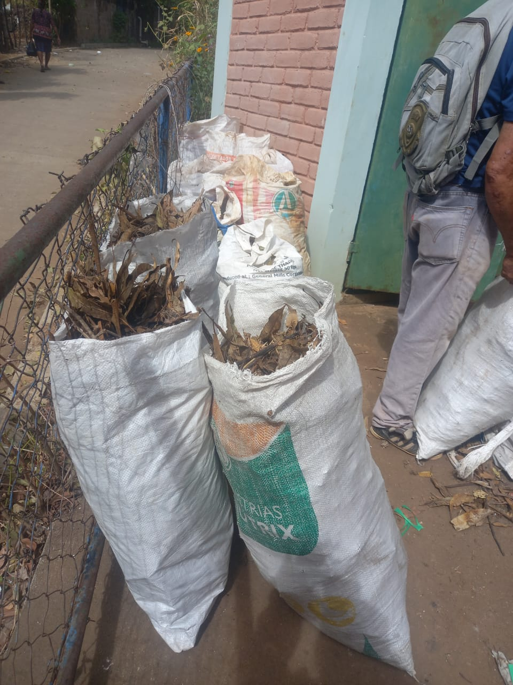

💧
Agua
Evaluamos y promovemos el uso responsable de recursos hídricos para fortalecer la resiliencia comunitaria.
Ayúdanos a transformar residuos orgánicos en oportunidades para nuestras comunidades. Con tu apoyo podemos impulsar iniciativas ambientales y contribuir a la recuperación de nuestros suelos en El Salvador.
Donar en GoFundMeImpulsamos soluciones comunitarias que aprovechan el agua, recuperan el suelo, fortalecen la producción sostenible y convierten recursos desaprovechados en nuevas oportunidades.
Fundación El Umbral del Oasis trabaja junto a comunidades para identificar problemas reales y convertir los recursos disponibles —agua, suelo, residuos orgánicos, conocimiento y organización— en soluciones productivas y ambientales.
Nuestro enfoque combina participación comunitaria, aprendizaje técnico, evidencia de campo y transparencia en cada etapa del proyecto.
Evaluamos y promovemos el uso responsable de recursos hídricos para fortalecer la resiliencia comunitaria.
Transformamos residuos vegetales en materia orgánica útil para mejorar la fertilidad y el aprovechamiento del suelo.
Estudiamos alternativas como la piscicultura y otros sistemas productivos compatibles con los recursos del territorio.
Las personas participan en la construcción, aprendizaje, mantenimiento y aprovechamiento de cada iniciativa.

Aprovechamos hojas secas y otros residuos vegetales para convertirlos, mediante compostaje, en un recurso útil para el suelo.
Estamos preparando una evaluación de campo para estudiar el recurso hídrico disponible, su caudal, calidad, usos comunitarios y viabilidad para sistemas productivos como la piscicultura.
La prioridad será proteger el uso humano y ambiental del agua antes de definir cualquier infraestructura productiva.
Conocer el proyectoConoce nuestras iniciativas de recaudación y descubre cómo puedes colaborar con proyectos ambientales y comunitarios que buscan generar resultados sostenibles.
Queremos comenzar en Palo Negro, Santa Ana Este, con un centro comunitario que permita aprovechar residuos orgánicos mediante compostaje y contribuir a la recuperación del suelo.
Nuestra visión es validar este modelo y posteriormente llevarlo a otras comunidades de El Salvador.
Una comunidad será nuestro comienzo. Nuestra visión es El Salvador.
Descubre nuestra iniciativa →Puedes apoyar nuestra iniciativa desde el enlace oficial de GoFundMe. Las donaciones se gestionan a través de esa plataforma.
Documentaremos el antes, durante y después de cada proyecto, incluyendo avances, fotografías, uso de recursos, resultados y aprendizajes.
Buscamos aliados, voluntarios, instituciones y personas interesadas en apoyar proyectos de resiliencia comunitaria.